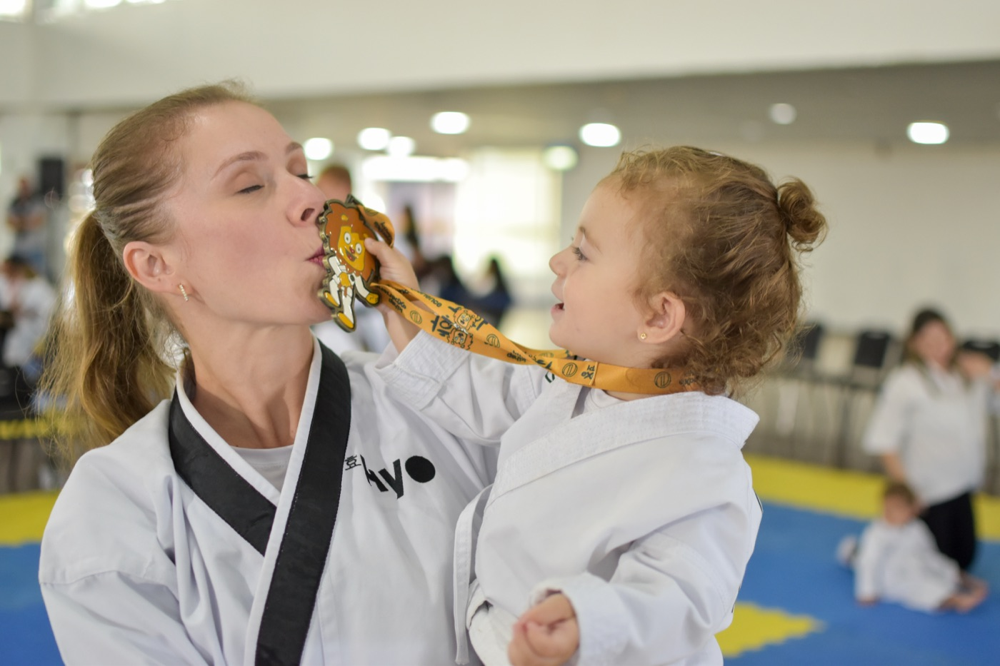

Mrs Master Cavenatti
Conhecimento para ocupar o próprio espaço.
10x campeã mundial de Taekwondo, tem formação em Educação Física e Fisiologia do Exercício, além de mestrado na modalidade. Cofundadora da Kihap, une experiência no esporte, conhecimento acadêmico e visão empreendedora.
Conheça sua trajetória ↗